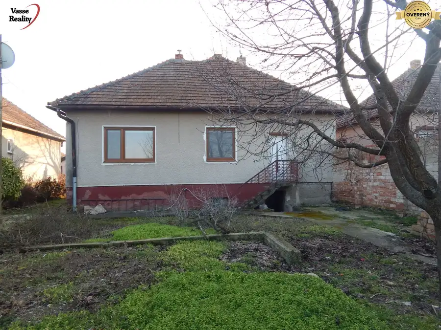
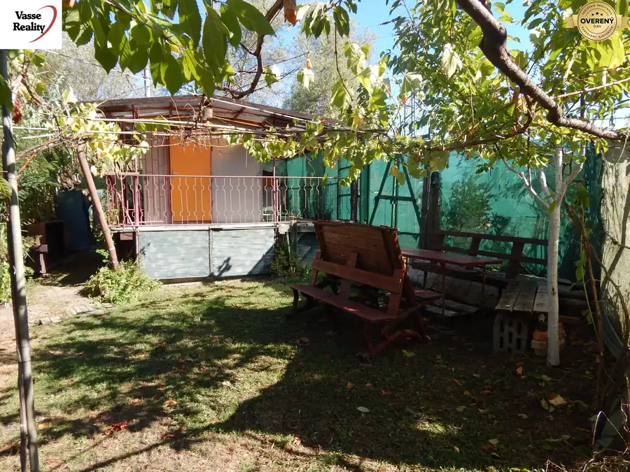
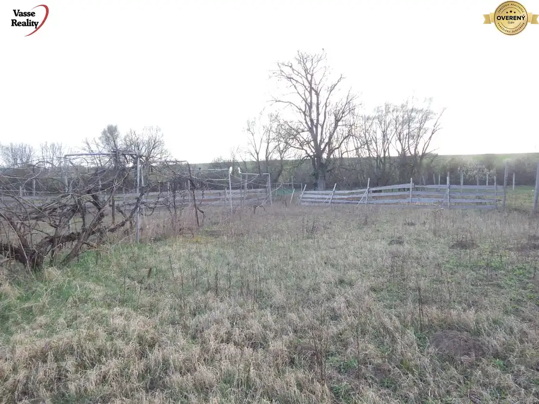
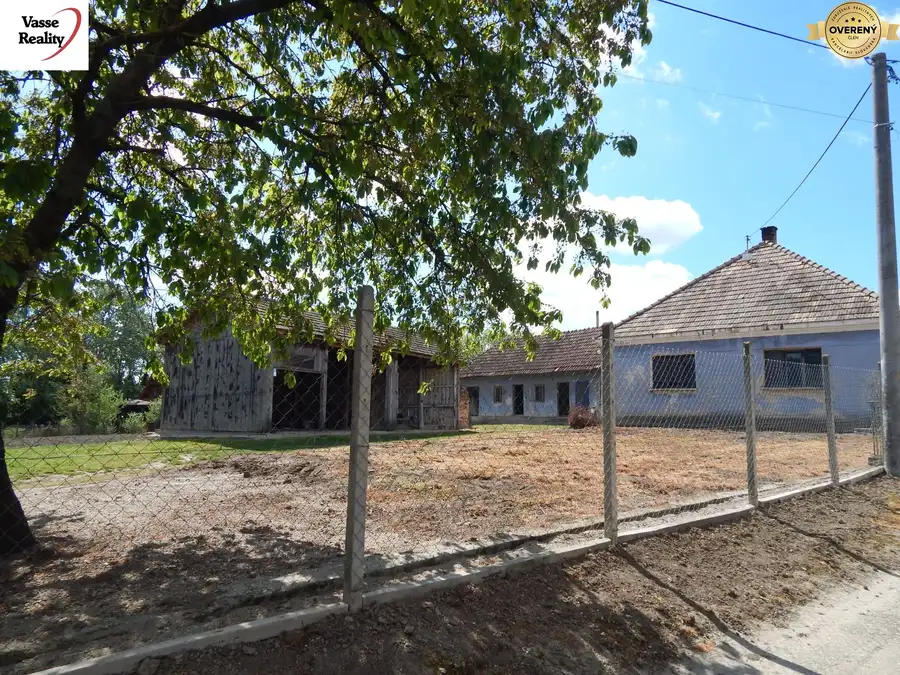
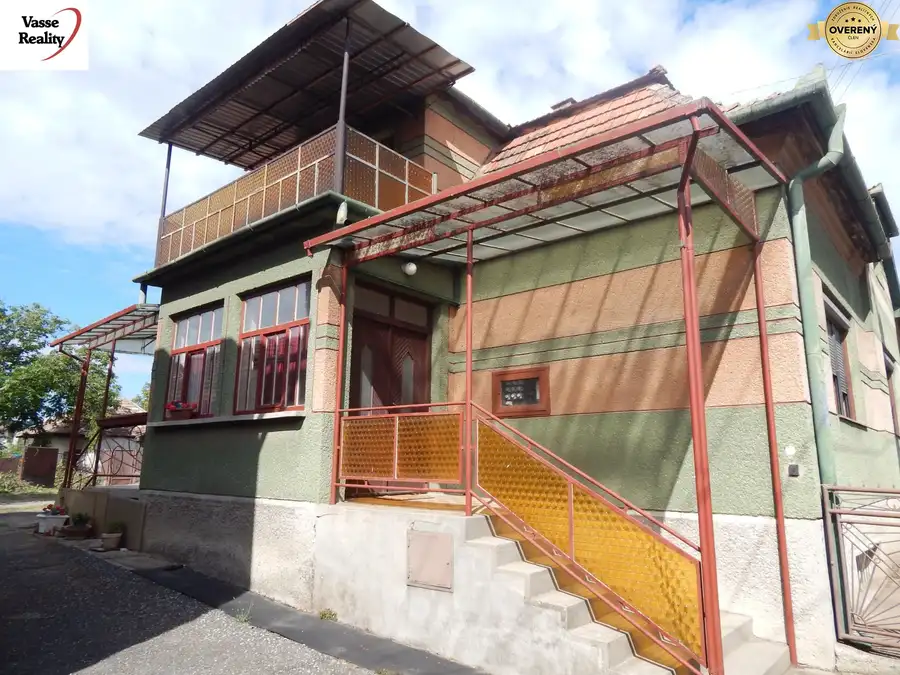

Aktuálna ponuka
Nehnuteľnosti, ktoré ponúkam
9 nehnuteľností na predaj a prenájom. Vyberte typ, alebo napíšte lokalitu.
9 z 9 ponúk
 Rodinné domy10
45 000 €REZERVOVANE ! Na predaj 4 izbový dom v Malých Kosihách.
Malé Kosihy
4-izbový121 m²
VASSE Reality Vám ponúka na predaj ihneď obývateľnú nehnuteľnosť v Malých Kosihách len 16 km od termálneho kúpaliska v Štúrove. S nehnuteľnsťou sa…
Rodinné domy10
45 000 €REZERVOVANE ! Na predaj 4 izbový dom v Malých Kosihách.
Malé Kosihy
4-izbový121 m²
VASSE Reality Vám ponúka na predaj ihneď obývateľnú nehnuteľnosť v Malých Kosihách len 16 km od termálneho kúpaliska v Štúrove. S nehnuteľnsťou sa…
 Rodinné domy9
30 000 €Na predaj chalupa v Dubníku pri Štúrove .
Dubník
3-izbový224 m²
LEN U NÁS! Vasse Reality vám ponúka na predaj 3-izbový vidiecky dom na pozemku o výmere 1100 m², nachádzajúci sa v malebnej obci Dubník, známej…
Rodinné domy9
30 000 €Na predaj chalupa v Dubníku pri Štúrove .
Dubník
3-izbový224 m²
LEN U NÁS! Vasse Reality vám ponúka na predaj 3-izbový vidiecky dom na pozemku o výmere 1100 m², nachádzajúci sa v malebnej obci Dubník, známej…
 Rodinné domy7
44 900 €Na predaj 3 izbový rodinný dom v Strekove .
Strekov
3-izbový174 m²
VASSE Reality ponúka na predaj rodinný dom v pokojnej časti obce Strekov, ktorý je ideálny pre tých, ktorí hľadajú kombináciu vidieckeho pokoja,…
Rodinné domy7
44 900 €Na predaj 3 izbový rodinný dom v Strekove .
Strekov
3-izbový174 m²
VASSE Reality ponúka na predaj rodinný dom v pokojnej časti obce Strekov, ktorý je ideálny pre tých, ktorí hľadajú kombináciu vidieckeho pokoja,…

Rodinné domy10 145 000 €Predaj rodinného domu, Šurany, Šurany, Nové Zámky Šurany 3-izbový795 m² Realitná kancelária VASSE Reality Vám ponúka na predaj 3-izbový rodinný dom v meste Šurany, ktorý sa nachádza na priestrannom a slnečnom pozemku o…
Pozemok10 23 500 €Martovce -na predaj jedinečný pozemok s chatou . Martovce 1-izbový707 m² VASSE Reality ponúka na predaj jedinečný pozemok s chatou v obci Martovce. Hľadáte miesto, kde sa príroda spája s úžitkom. Ponúkame na predaj…
Rodinné domy2 41 900 €Na predaj 2 izbový dom v Kolte, 20km od Nových Zámkov. Kolta 2-izbový1464 m² Predstavte si pokojné rána na vidieku, vôňu čerstvej kávy a ticho, ktoré narúša len spev vtákov. Práve takéto miesto vám prináša VASSE Reality –…
Rodinné domy10 104 000 €Na predaj vidiecky dom na pozemku 2104 m2 v Martovciach. Martovce 3-izbový Exluzívne len u nás! KÚSOK VIDIECKEHO SNA V OBCI MARTOVCE. Predstavte si svoje dni s vôňou čerstvej pôdy, spev vtákov a pokoj, ktorý v meste… Rodinné domy10
25 000 €Na predaj 4.izb .dom - chalupa v Brutoch - pozemok 741 m2.
Bruty
4-izbový130 m²
Vasse Reality Vám ponúka na predaj 4-izbový rodinný dom v obci Bruty, vhodný aj ako chalupa , situovaný na pozemku s celkovou výmerou 741 m².…
Rodinné domy10
25 000 €Na predaj 4.izb .dom - chalupa v Brutoch - pozemok 741 m2.
Bruty
4-izbový130 m²
Vasse Reality Vám ponúka na predaj 4-izbový rodinný dom v obci Bruty, vhodný aj ako chalupa , situovaný na pozemku s celkovou výmerou 741 m².…

Rodinné domy10 59 000 €Na predaj veľký 4 izbový dom v Salke - ihneď obývateľný! Salka 4-izbový357 m² EXKLUZÍVNA PONUKA! BÝVANIE IHNEĎ – BEZ NUTNOSTI ČAKAŤ NA REKONŠTRUKCIU Vasse Reality Vám ponúka na predaj priestranný 4-izbový rodinný dom v centre…Tomuto výberu zatiaľ nezodpovedá žiadna ponuka. Napíšte mi, čo hľadáte.